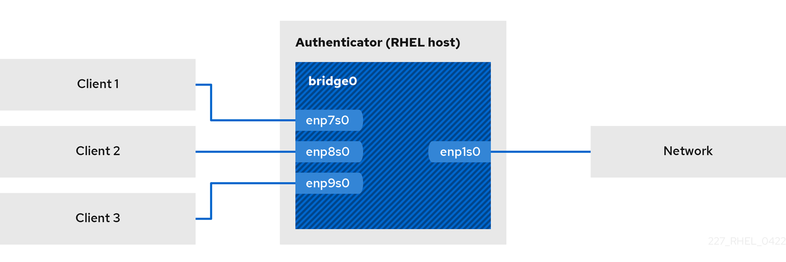

Setting up an 802.1x network authentication service for LAN clients by using hostapd with FreeRADIUS backend
The IEEE 802.1X standard defines secure authentication and authorization methods to protect networks from unauthorized clients. By using the hostapd service and FreeRADIUS, you can provide network access control (NAC) in your network.
Note:
Red Hat supports only FreeRADIUS with Red Hat Identity Management (IdM) as the backend source of authentication.
In this documentation, the RHEL host acts as a bridge to connect different clients with an existing network. However, the RHEL host grants only authenticated clients access to the network.
